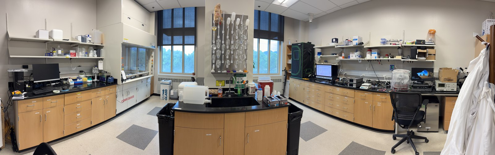
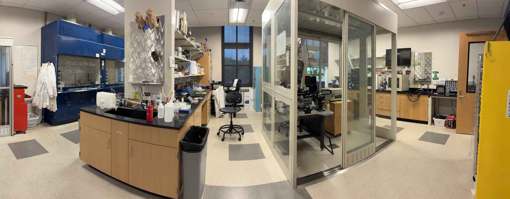
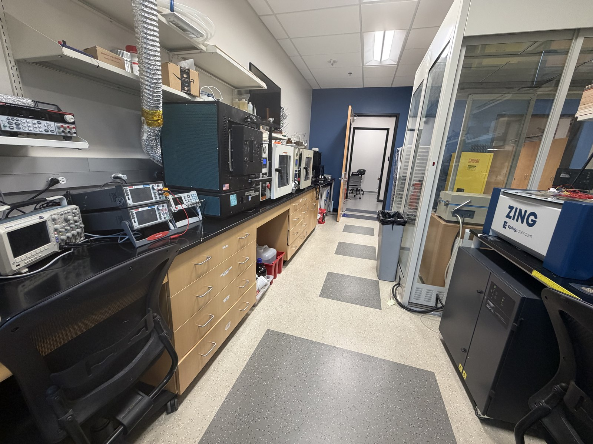
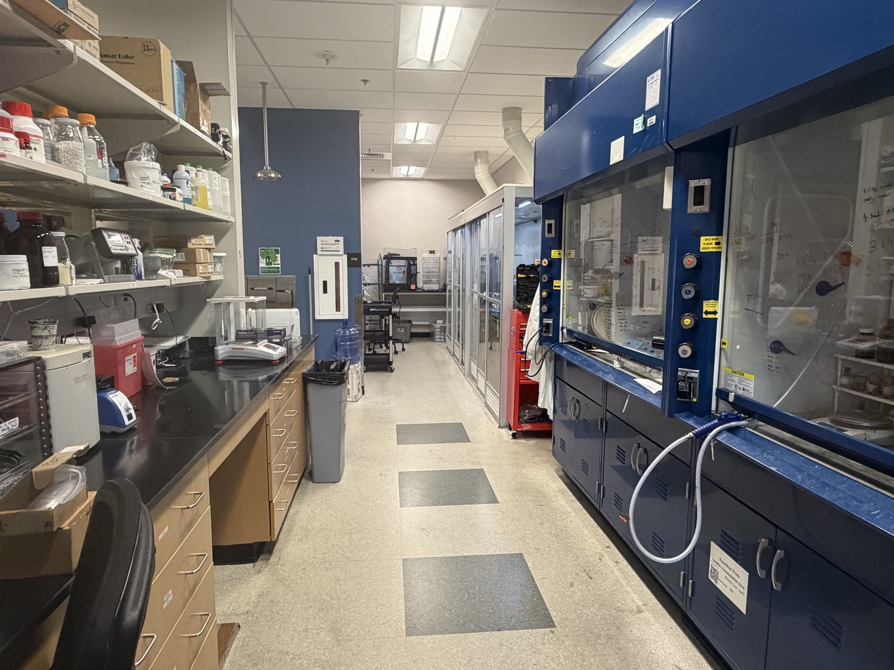

Facilities
In addition to having access to CU's core facilities and shared instrumentation, the BEEM Lab maintains dedicated lab space which includes the following equipment.
- General wet lab facilities, including chemical fume hoods, benches, and chemical storage
- Formulation equipment including planetary mixers (Thinky AR-100), overhead mixers, and heat-stir plates
- MPS TF-100 semi-automatic screen printer
- Dimatix DMP-2831 ink-jet printer
- 3D printers including Formlabs SLA, Prusa3D, and Raise3D Pro2 FDM
- Epilog Zing IR laser cutter
- Other materials deposition tools including Laurell spin-coater, MTI Corporation blade coater
- Electrical characterization tools including Signatone H150 probe station, Keithley 2450 and Keithley 2636A SMUs, oscilloscopes, multimeters, power sources, Agilent 4284A LCR meter, and potentiostats (PalmSens)
- Leica optical microscope, stereoscope
- Environment and plant growth chambers



